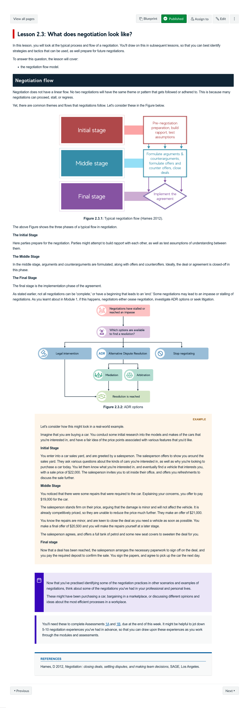
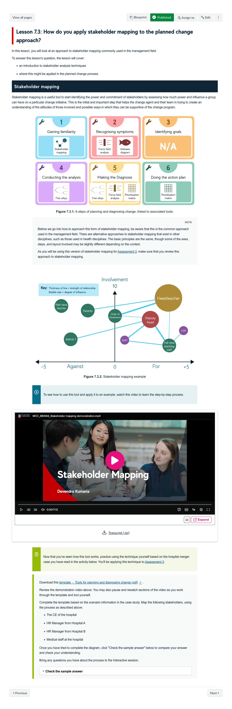
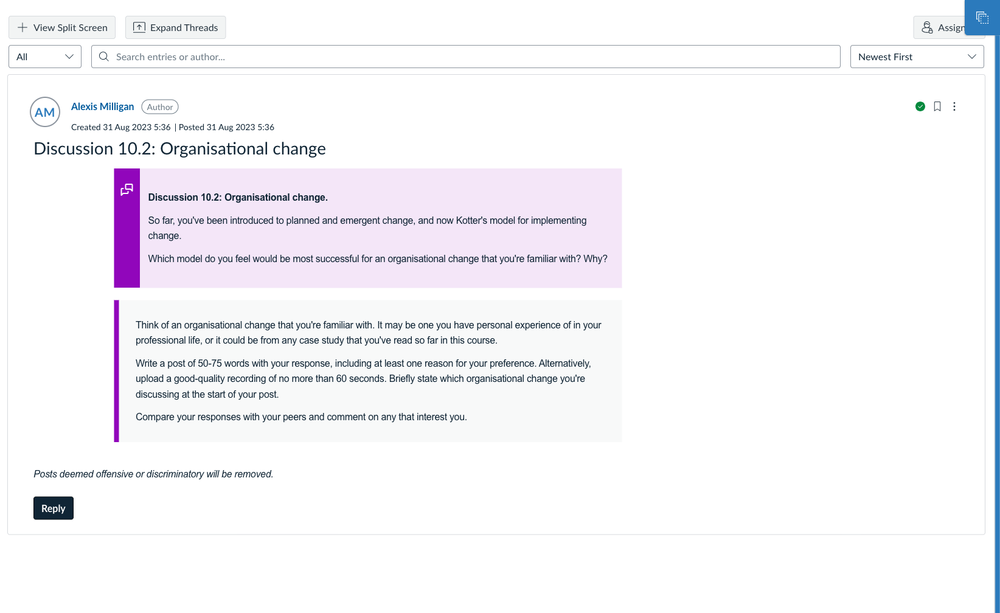
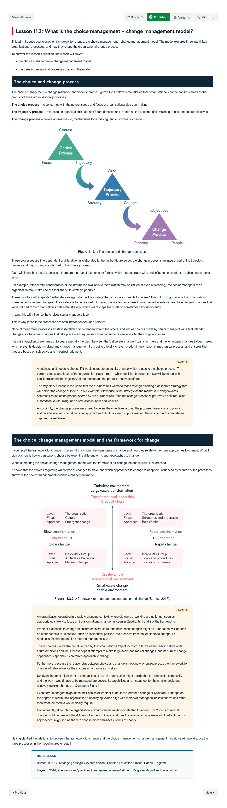

Course Description
This course explores approaches to managing workplace conflict and change. Students will reflect upon and develop their own conflict management skills, and practice analysing the conflict management and negotiation skills of others. The course will consider theory and research, as well as practical management tools and techniques for addressing conflict and change. Students will apply these skills and techniques to case studies and real-world scenarios in order to critically assess successful change proposals and change implementation practices.
Learning Outcomes
- Explain the causes of conflict in organisations, and different mechanisms for conflict management and resolution.
- Critically analyse different frameworks and methods of organisational change.
- Assess the major processes and practices that underlie successful and unsuccessful change.
- Diagnose the dynamics of environmental and organisational change.
- Apply conflict and change management concepts and theories to real-world situations.
Learning Experience
Topics
- Introduction to conflict and alternative dispute resolution
- Negotiation
- Integrative and distributive bargaining
- Decision-making and ethics
- Organisational change and change resistance
- Theoretical approaches to change
- Diagnosing and planning change
- Emergent views on change
- Role of power, politics and leadership in change
- Kotter's 8-step model
- Varieties of change & the choice-change management model
Development Team

Devendra Kumaria
Course Author
Lead
Kat Alchin
Learning Designer
Lead
Alexis Milligan
Digital Education Developer
Lead
Assessments
-
Reflective journal
Learning Journal
In this task learners draw connections between their own personal experiences of conflict, and reflect on how they might better navigate and resolve conflict. Learners are asked to consider specific concepts and techniques, identify which may have been present in their experiences, and consider how to create alternative outcomes and better manage conflict.
15%
-
Conflict management and negotiation observation
Observation, Report
Learners are asked to apply multiple technique to prepare for a negotiation, in order to actively and dynamically manage a conflict. They are asked to identify and explain the causes of conflict between two parties, propose alternative conflict management methods, and reflect upon their ways in which their preferences for handling conflict can influence their recommendations.
20%
-
Change management proposal presentation
Presentation, Oral Defence, Media Task
Learners are asked to make recommendations for an organisational change, based on a planned change approach. They will analyse and diagnose the issues experienced within an organisation, and present a proposed solution for management.
35%
-
Change implementation executive report
Report, Case Study
Learners propose an organisational change along with an implementation plan for a given case study. Using Kotter's 8 Step model they must write an executive report detailing their analysis and recommendations.
30%
Snapshots

Originally a heavily theory based lessons, sourced further media for students to engage in, as well as a short media-based activity where students would practice applying these theories in practice. It was discussed that students often struggled with applyimg or understanding these theories to real-world scenarios in their assessments or, so we focused several practice activities on asking students to do this. " onclick="openSnapshot(this)" >
Set up a visual link to a compelex stepped process, with clearly explained how to demonstration videos, as ewll as graphics that situate learner into an overall process and how it links with the theories they've learnt, which they'll also use for the assessments. " onclick="openSnapshot(this)" >
Discussion boards in this course always gave students the option to upload a voice recording instead of writing out responses, so that students could best manage workloads and choose how to personalise learning according to their skills. " onclick="openSnapshot(this)" >
Co-designed images to help explain and link the choice and change process with worked examples, and inforgraphics to demonstrate the process better, as well as it's links to earlier management leadership framework model. " onclick="openSnapshot(this)" >